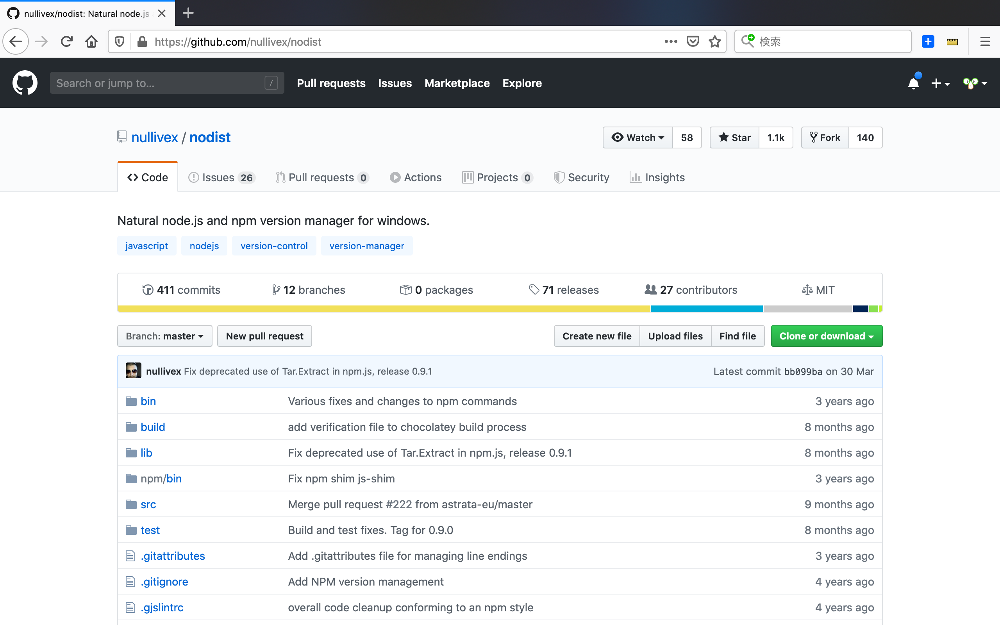
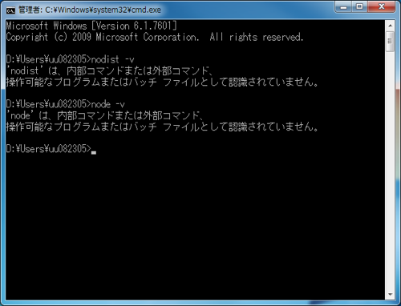
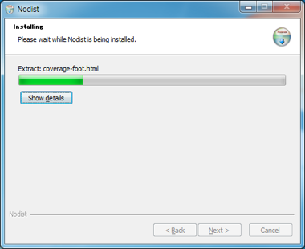
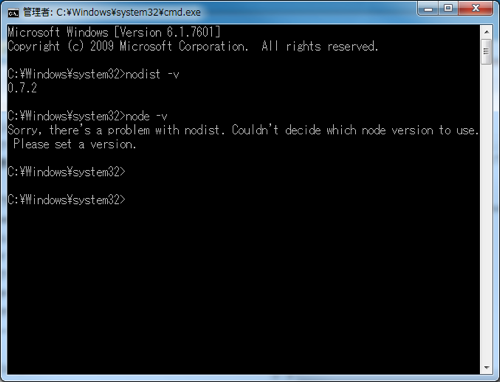
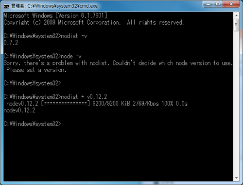
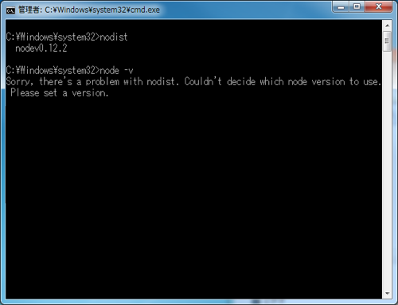
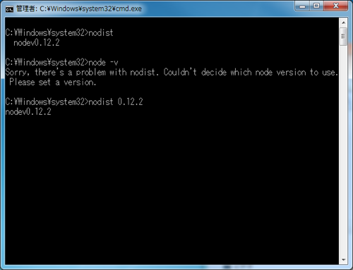
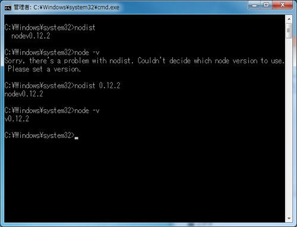

nodist set up

steps
- nodistのページを開きます。
本サイト内にあるWindows用インストーラーのリンクをクリックし、ダウンロードします。

インストール前のnodist，nodeの状態
$ nodist -v $ node -v
- インストーラーで、Nodistをインストールします。

- ライセンスに同意する

- デフォルトのまま 特に指定なし

- デフォルトのまま 特に指定なし

- インストール開始
 - インストール完了

- nodist -vでバージョンが表示されれば、OKです。
$ nodist -v
- node は、まだ環境構築されていない
$ node -v - nodist + v0.12.2を行い、v0.12.2をダウンロードします。
$ nodist + v0.12.2 - 上記手順後でもnode は、まだバージョン表示されない
$ node -v - nodist 0.12.2でバージョン指定を行います。
$ nodist 0.12.2 - node -vでバージョンが表示されれば、OKです。
$ node -v